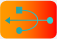

Usb Monitor© 2018, ProtoIt Platform: ARDUINO |  |
Beschrijving:
Deze tegel heb je nodig om in ProtoIt de usb-monitor te gebruiken. Met de usb-monitor kun je controleren welke waarde de vier te ontvangen signalen hebben. Deze signalen worden via de usb naar ProtoIt doorgestuurd. De usb-monitor van ProtoIt vind je onder het menu Robot.
Onderdelen:
Usb Monitor
Op de programmategel:
| Signaal A | Eerste waarde die naar de usb-monitor van ProtoIt wordt gestuurd. |
| Signaal B | Tweede waarde die naar de usb-monitor van ProtoIt wordt gestuurd. |
| Signaal C | Derde waarde die naar de usb-monitor van ProtoIt wordt gestuurd. |
| Signaal D | Vierde waarde die naar de usb-monitor van ProtoIt wordt gestuurd. |